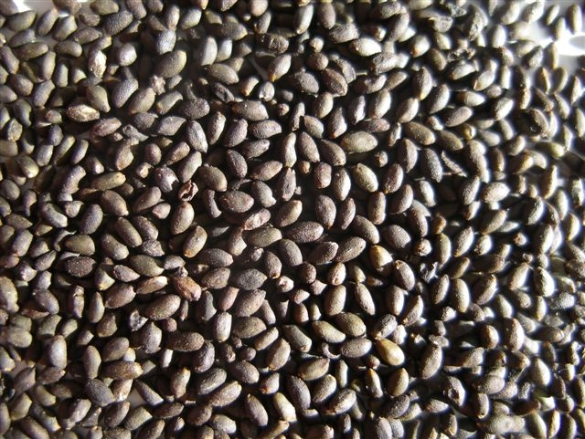

Salvia divinorum seeds
The Salvia divinorum Research and Information Center
is created and maintained by
Daniel Siebert
|  |
| Close-up photo of seeds that were collected in the Mazatec region of Oaxaca, Mexico, in 2004. |
 |
| These seeds were collected by Daniel Siebert in 1994. They were obtained from plants of the 'Bunnell' clone that were growing at the Botanical Dimensions Botanical Garden in Hawaii. This was the first documented instance in which Salvia divinorum plants were found to spontaneously produce seeds. Each mark on the ruler represents 1 millimeter. Salvia divinorum seeds had previously been collected by Leander J. Valdés III and Aaron S. Reisfield, but their seeds were obtained from hand-pollinated plants. |
|